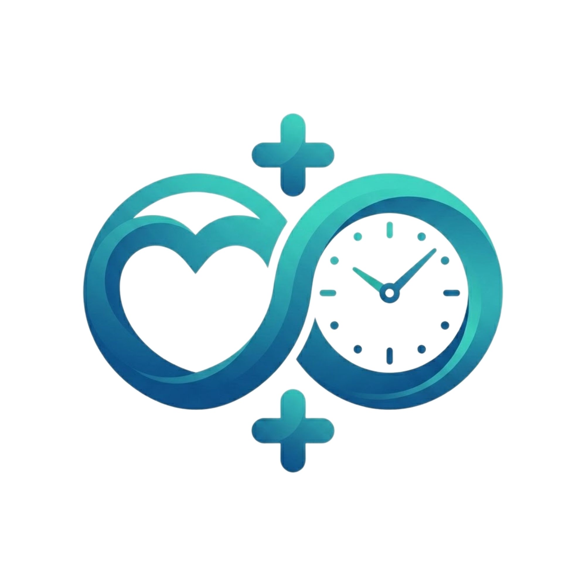

HealthyShift
Optimizamos tu salud eliminando las esperas innecesarias.

Nuestros Servicios
- Gestión de Turnos: Sacá tu turno de forma digital y elegí el horario que mejor te convenga.
- Recordatorios: Notificaciones personalizadas y opción de agendar en tu calendario.
- Urgencias: Contacto directo con guardia y servicio de ambulancia.
- Reputación: Consultá las reseñas de los profesionales antes de agendar.
¿Cómo empezar?
Accedé a nuestro tutorial de uso y realizá el pago de tu consulta hasta 15 minutos antes para confirmar tu asistencia.
Información Importante
Para garantizar la puntualidad de todos los pacientes, si se llega tarde al turno, el mismo será reasignado al final de la lista del día.